Extended: More uses of `config` to control ggpedigree plots
Source:vignettes/articles/v11_configuration_extended.Rmd
v11_configuration_extended.Rmd
library(ggpedigree) # ggPedigree lives here
library(BGmisc) # helper utilities & example data
library(ggplot2) # ggplot2 for plotting
library(viridis) # viridis for color palettes
library(tidyverse) # for data wranglingEvery gg-based plotting function in ggpedigree accepts
a config argument. This is an easier way to control plot
behavior without rewriting the plotting code.
As already discussed, a config is a named list. Each
element corresponds to one plotting, layout, or aesthetic option. You
pass the list to the plotting function and the plot is drawn using those
values.
You do not need to supply every option. You only provide the options
you want to change. Any options you do not specify will use the package
defaults. You can see a full list of supported options and their
defaults by reviewing the documentation for
getDefaultPlotConfig().
Basic usage of config in ggPedigree()
As before, we will use the potter pedigree dataset
bundled in BGmisc.
A basic pedigree plot uses defaults:
ggPedigree(
potter,
famID = "famID",
personID = "personID",
momID = "momID",
dadID = "dadID"
)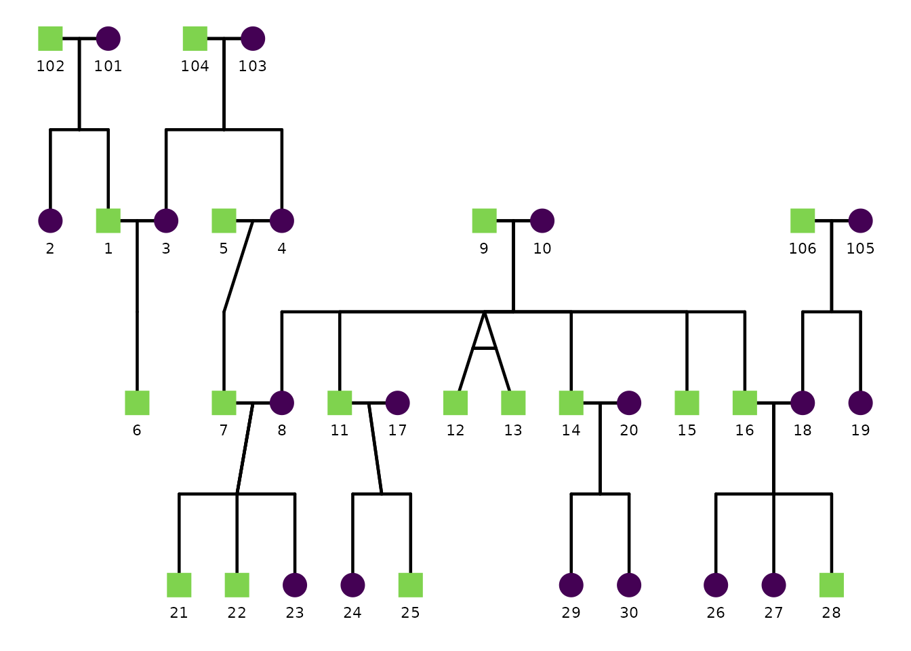
Sex coding: code_male and code_female
ggPedigree() (and other ggpedigree plots that use sex)
need to know how sex is encoded in your data so they can assign the
correct shapes (and optionally colors)
for female, male, and unknown.
The code_male and code_female config
options define which values in your sex column should be treated as male
vs female. The defaults assume:
code_female = 0code_male = 1
If your dataset uses different codes (for example 1/2 or
"M"/"F"), override these in config.
# Example: sex coded as 1 = male, 2 = female
ggPedigree(
ped,
famID = "famID",
personID = "personID",
momID = "momID",
dadID = "dadID",
config = list(
code_male = 1,
code_female = 2,
code_unknown = 3
)
)
# Example: sex coded as "M" / "F"
ggPedigree(
ped,
famID = "famID",
personID = "personID",
momID = "momID",
dadID = "dadID",
config = list(
code_male = "M",
code_female = "F"
)
)Once the sex codes are interpreted correctly, the plot uses the
corresponding shape settings (sex_shape_female,
sex_shape_male, sex_shape_unknown) and, when
enabled, sex-based coloring (sex_color_include,
sex_color_palette).
Customizing specific plot components via config
The rest of this section demonstrates how config affects
specific components of the pedigree plot.
1) Labels
Label behavior is controlled by keys such as:
label_includelabel_columnlabel_methodlabel_max_overlaps-
label_text_color,label_text_family label_text_size-
label_nudge_x,label_nudge_y label_text_angle
This example customizes labels. Here we label individuals by
first_name, enlarge label text, and nudge the labels down
slightly.
ggPedigree(
potter,
famID = "famID",
personID = "personID",
momID = "momID",
dadID = "dadID",
config = list(
label_include = TRUE,
label_column = "first_name",
label_text_size = 3.2,
label_nudge_y = 0.15
)
)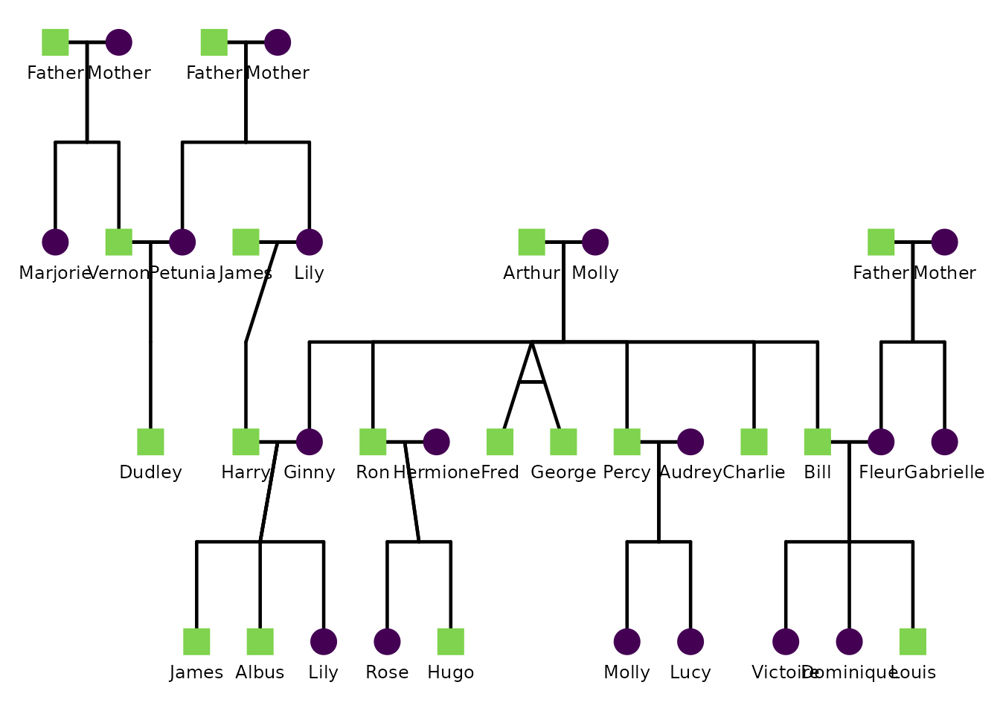
To turn labels off completely:
ggPedigree(
potter,
famID = "famID",
personID = "personID",
momID = "momID",
dadID = "dadID",
config = list(label_include = FALSE)
)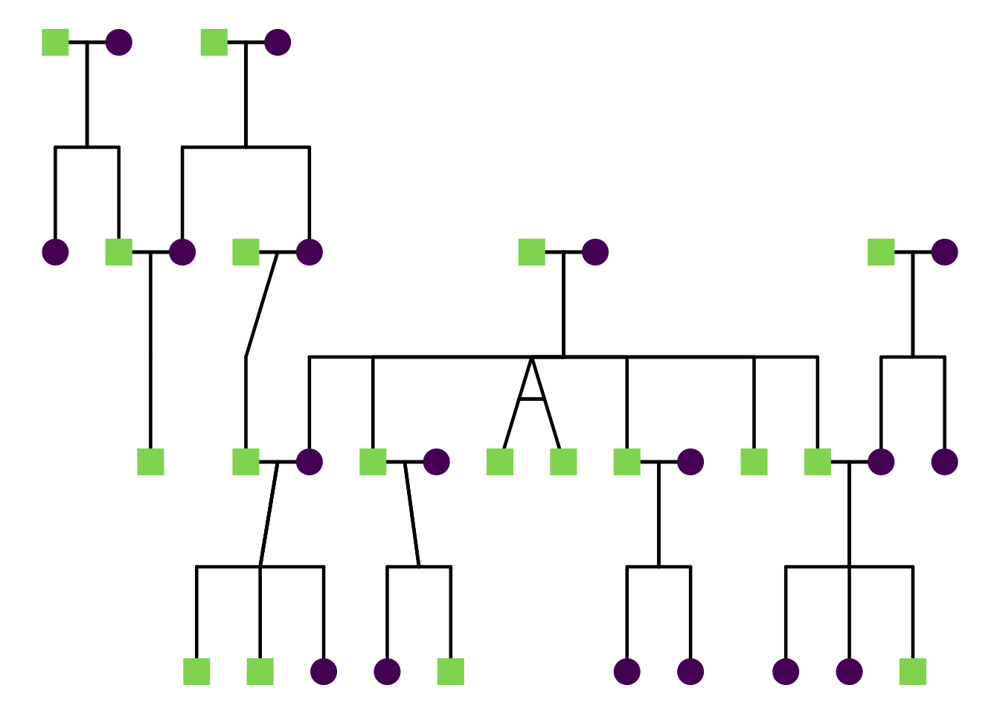
You can also use repelled labels to avoid overlaps:
ggPedigree(
potter,
famID = "famID",
personID = "personID",
momID = "momID",
dadID = "dadID",
config = list(
label_include = TRUE,
label_method = "geom_text_repel",
label_max_overlaps = 10,
label_text_size = 9,
label_segment_color = "grey50"
)
)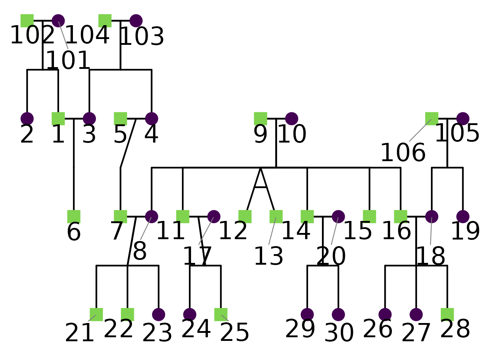
Note that short labels are less likely to overlap, so consider abbreviating labels if your pedigree is dense. In this example, I enlarged the text size to demonstrate repulsion more clearly.
2) Points and outlines
Point size and whether points scale automatically are controlled by:
point_sizepoint_scale_by_pedigree
Outlines are controlled by:
outline_includeoutline_multiplieroutline_coloroutline_alpha
This example disables automatic point scaling and adds black outlines to points.
ggPedigree(
potter,
famID = "famID",
personID = "personID",
momID = "momID",
dadID = "dadID",
config = list(
point_scale_by_pedigree = FALSE,
point_size = 6,
outline_include = TRUE,
outline_color = "maroon",
outline_multiplier = 1.5,
outline_alpha = 1
)
)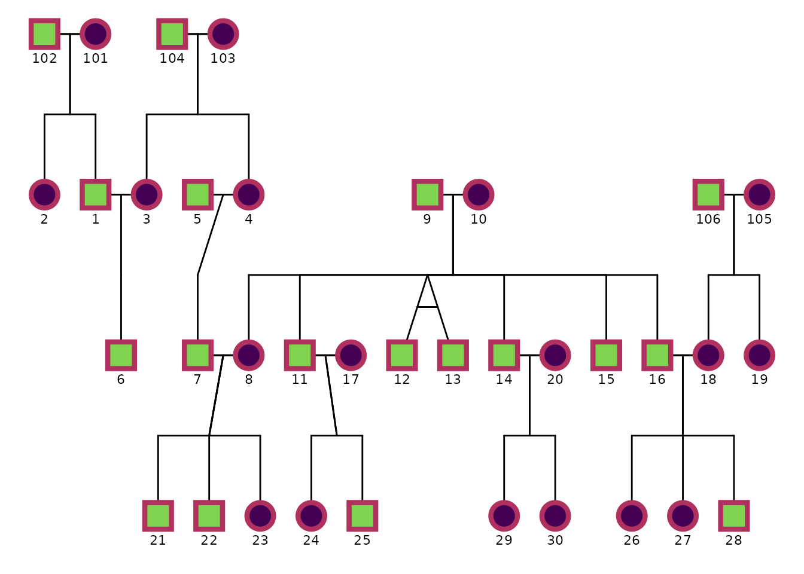
3) Segments (relationships)
Segments are controlled by options such as:
-
segment_linewidth,segment_linetype -
segment_offspring_color,segment_parent_color,segment_spouse_color -
segment_self_*for self-loops -
segment_mz_*for MZ twin segments
This example thickens relationship segments and changes the spouse segment color.
ggPedigree(
potter,
famID = "famID",
personID = "personID",
momID = "momID",
dadID = "dadID",
config = list(
segment_linewidth = 2,
segment_spouse_color = "steelblue",
segment_parent_color = "black",
segment_offspring_color = "black"
)
)
Self-loop geometry is also configurable:
ggPedigree(
inbreeding %>% filter(famID %in% 5),
famID = "famID",
personID = "ID",
momID = "momID",
dadID = "dadID",
config = list(
segment_self_linetype = "dotdash",
segment_self_color = "hotpink",
segment_self_alpha = 0.6,
segment_self_linewidth = 1.5,
segment_self_curvature = -0.2,
segment_self_angle = 80,
code_male = 0
)
) + ggtitle("Custom self-loop appearance")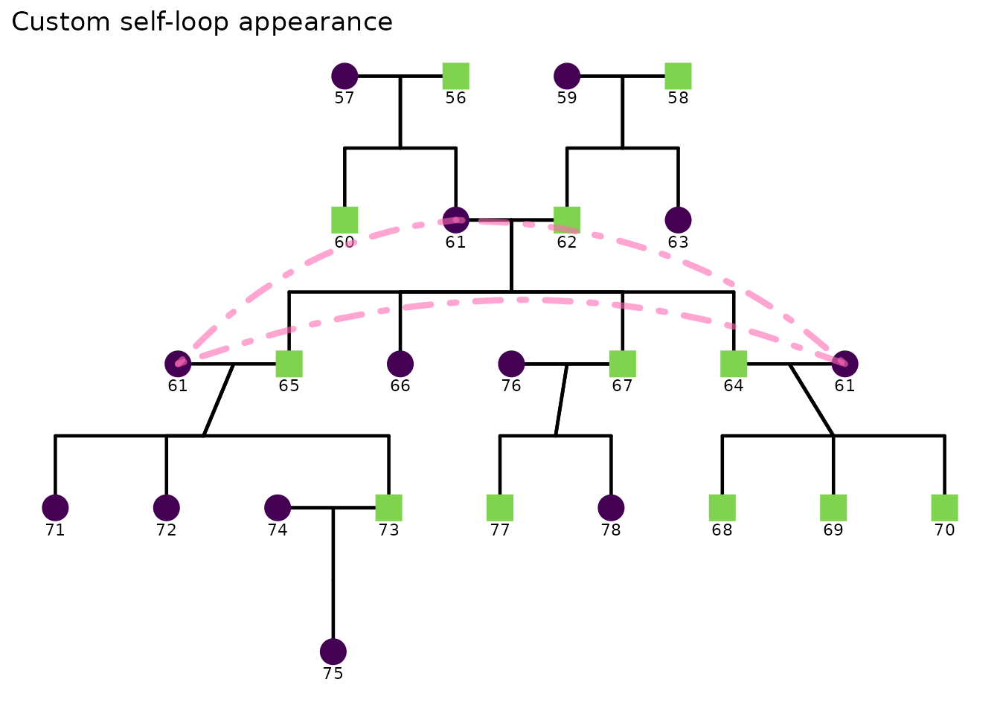
4) Sex appearance
Sex is controlled by:
sex_color_includesex_color_palette-
sex_shape_female,sex_shape_male,sex_shape_unknown -
sex_legend_show,sex_legend_title
This example shows sex legend and customizes shapes.
Here I use shapes 17 (triangle) for males, 18 (diamond) for females,
and 16 (circle) for unknown. You can find a full list of shape codes in
the pch documentation (?points). You can also
use shapes from the ggplot2 shape palette (e.g., 21-25 for
filled shapes). Here I also disable sex coloring to focus on shapes
alone.
ggPedigree(
potter,
famID = "famID",
personID = "personID",
momID = "momID",
dadID = "dadID",
config = list(
sex_legend_show = TRUE,
sex_shape_female = 18,
sex_shape_male = 17,
sex_shape_unknown = 16,
sex_color_include = FALSE
)
)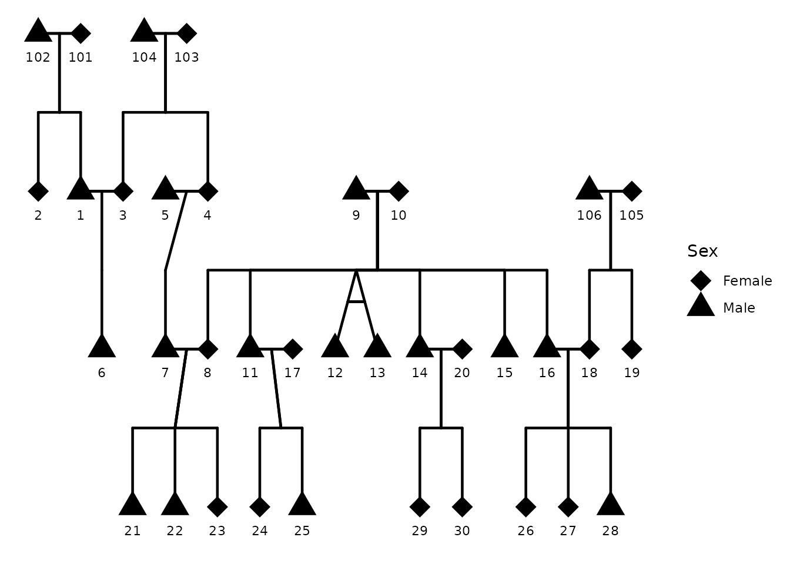
Below, I use a custom color palette for sex as well as emoji shapes for fun.
plot_ped <- ggPedigree(
potter,
famID = "famID",
personID = "personID",
momID = "momID",
dadID = "dadID",
config = list(
sex_color_palette = c("purple", "orange", "grey50"),
sex_shape_female = "🥰",
sex_shape_male = "🚗"
)
)
ggplot2::ggsave(
filename = "custom_sex_emoji_pedigree.png",
plot = plot_ped,
width = 8,
height = 6,
dpi = 300
)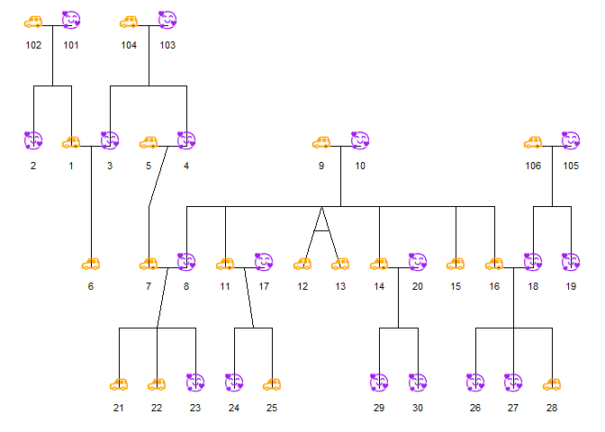
Note that when using emoji shapes, it is best to use
ggsave() to save the plot to a file, as some R graphics
devices may render emoji differently. Notice how the emoji shapes appear
in the saved PNG file below compares to the image rendered during the
preview above. These may vary because of differences in font
rendering.
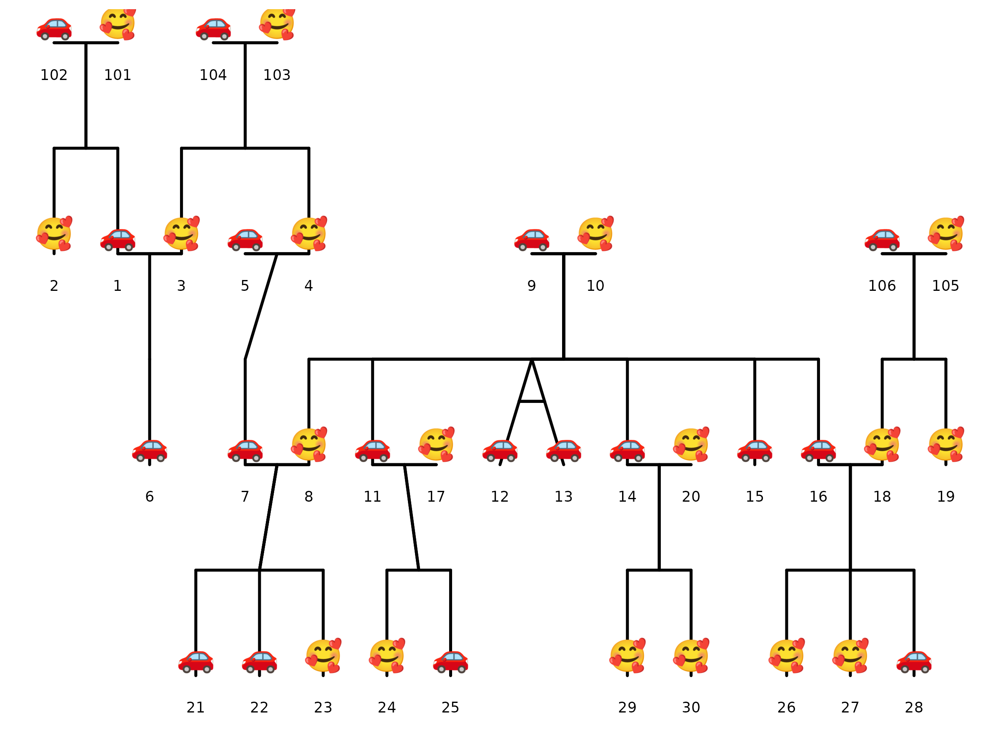
5) Affected status overlay
Affected status behavior is controlled by keys such as:
status_include-
status_code_affected,status_code_unaffected -
status_alpha_affected,status_alpha_unaffected -
status_color_affected,status_color_unaffected status_legend_show
If your dataset includes an affected status column, you can control how affected status is drawn.
Below is a template showing the relevant config keys. Here I use the
hazard dataset from BGmisc. The
affected column uses 1 for affected and 0 for
unaffected.
ggPedigree(
hazard,
famID = "famID",
personID = "ID",
momID = "momID",
dadID = "dadID",
status_column = "affected",
config = list(
code_male = 0,
status_include = TRUE,
status_code_affected = 1,
status_code_unaffected = 0,
status_alpha_affected = .6,
status_alpha_unaffected = 0,
status_color_affected = "red",
status_shape_affected = 8,
status_legend_show = TRUE
)
)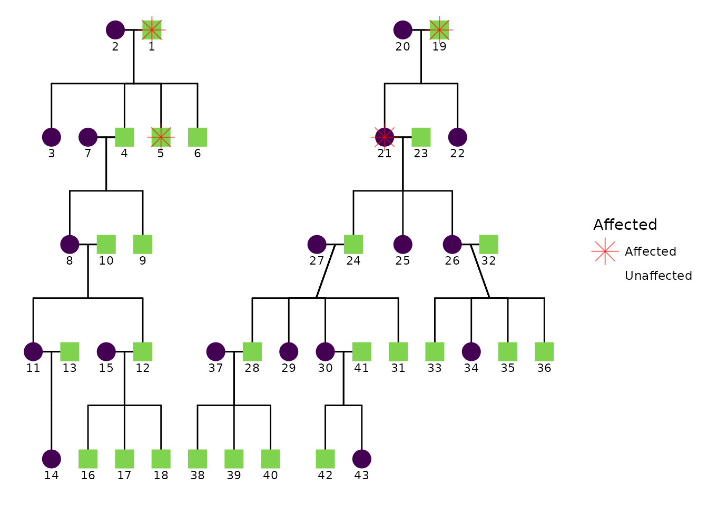
6) Focal fill: highlighting relatives of a focal individual
A common analysis task is to pick a focal individual and visually emphasize how strongly other individuals are related to that focal person. In ggpedigree, this is handled by focal fill. When focal fill is enabled, node fill colors are mapped to a focal-based value (for example additive genetic relatedness or another focal-derived scalar).
Focal fill is controlled entirely through config. The
minimal ingredients are:
focal_fill_include = TRUEfocal_fill_personID = <ID of focal person>-
focal_fill_component = <component to use for focal calculation>. It can be"additive"(default),"mitochondrial","patID", or"matID". -
focal_fill_methodis the Method used for focal fill gradient. Options are ‘steps’, ‘steps2’, ‘step’, ‘step2’, ‘viridis_c’, ‘viridis_d’, ‘viridis_b’, ‘manual’, ‘hue’, ‘gradient2’, ‘gradient’.
Turning focal fill on
Below we choose an individual as the focal person, enable focal fill,
and disable sex coloring to highlight the focal fill pattern clearly.
The exact person identifier must match the personID column
used in the plot.
ggPedigree(
potter,
famID = "famID",
personID = "personID",
momID = "momID",
dadID = "dadID",
config = list(
focal_fill_include = TRUE,
sex_color_include = FALSE,
focal_fill_component = "additive",
focal_fill_personID = 8,
focal_fill_legend_show = TRUE,
focal_fill_legend_title = "Focal relatedness"
)
)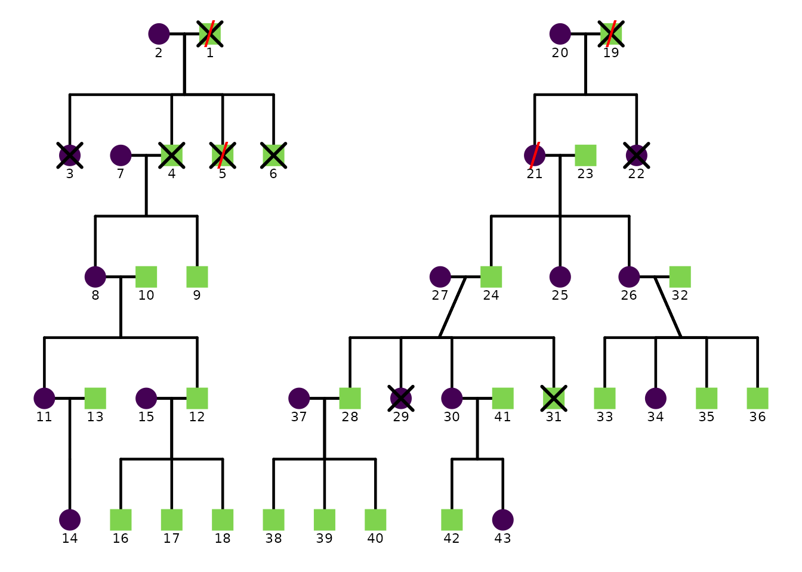
If the plot is dense, it is often helpful to turn labels off or
reduce their prominence, so the focal fill pattern reads cleanly. Note
we can also choose different focal components such as
"mitochondrial", which traces matrilineal relatedness.
ggPedigree(
potter,
famID = "famID",
personID = "personID",
momID = "momID",
dadID = "dadID",
config = list(
focal_fill_include = TRUE,
sex_color_include = FALSE,
focal_fill_personID = 8,
focal_fill_component = "mitochondrial",
label_include = FALSE,
point_scale_by_pedigree = FALSE,
point_size = 6
)
)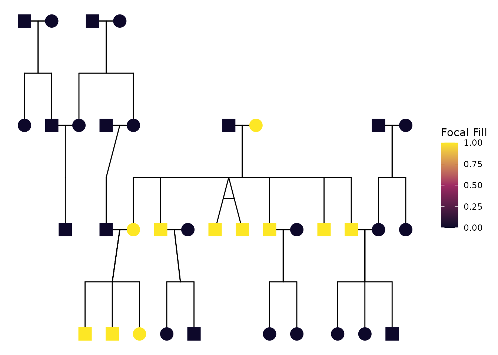
Choosing the focal fill scale and colors
Focal fill supports multiple scale methods via
focal_fill_method. For continuous gradients, the most
common choice is "gradient" (default) or
"gradient2".
You can explicitly set the low/mid/high colors used by the focal gradient:
ggPedigree(
potter,
famID = "famID",
personID = "personID",
momID = "momID",
dadID = "dadID",
config = list(
focal_fill_include = TRUE,
sex_color_include = FALSE,
focal_fill_personID = 8,
focal_fill_method = "gradient2",
focal_fill_low_color = "purple",
focal_fill_mid_color = "orange",
focal_fill_high_color = "red",
focal_fill_scale_midpoint = 0.10,
focal_fill_legend_show = TRUE
)
)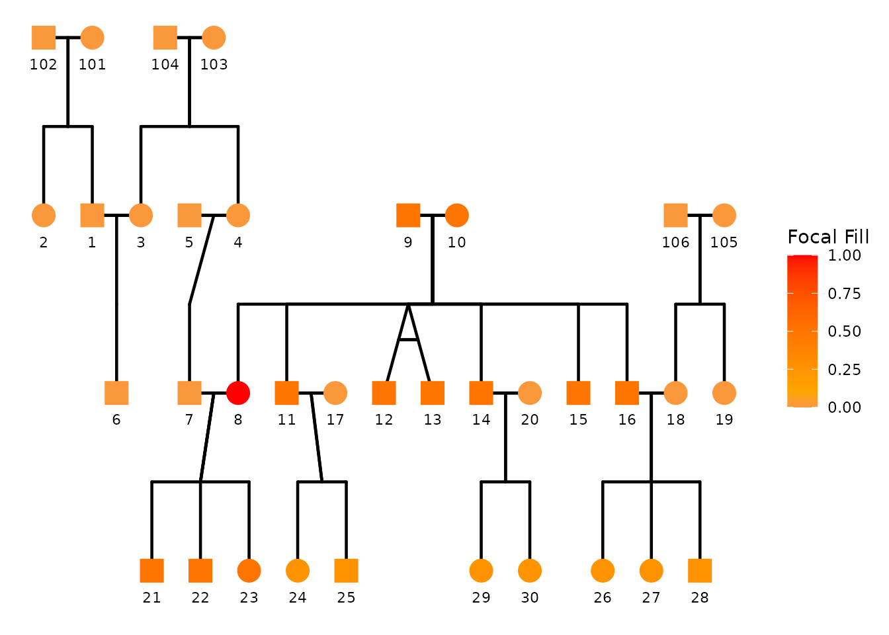
Discrete focal fill palettes
If you prefer discrete bins rather than a continuous gradient, you
can use step-based scales (for example "steps" /
"steps2"). When using step-based methods,
focal_fill_n_breaks controls the number of discrete
breaks.
ggPedigree(
potter,
famID = "famID",
personID = "personID",
momID = "momID",
dadID = "dadID",
config = list(
focal_fill_include = TRUE,
sex_color_include = FALSE,
focal_fill_personID = 8,
focal_fill_method = "steps2",
focal_fill_n_breaks = 9,
focal_fill_legend_show = TRUE
)
)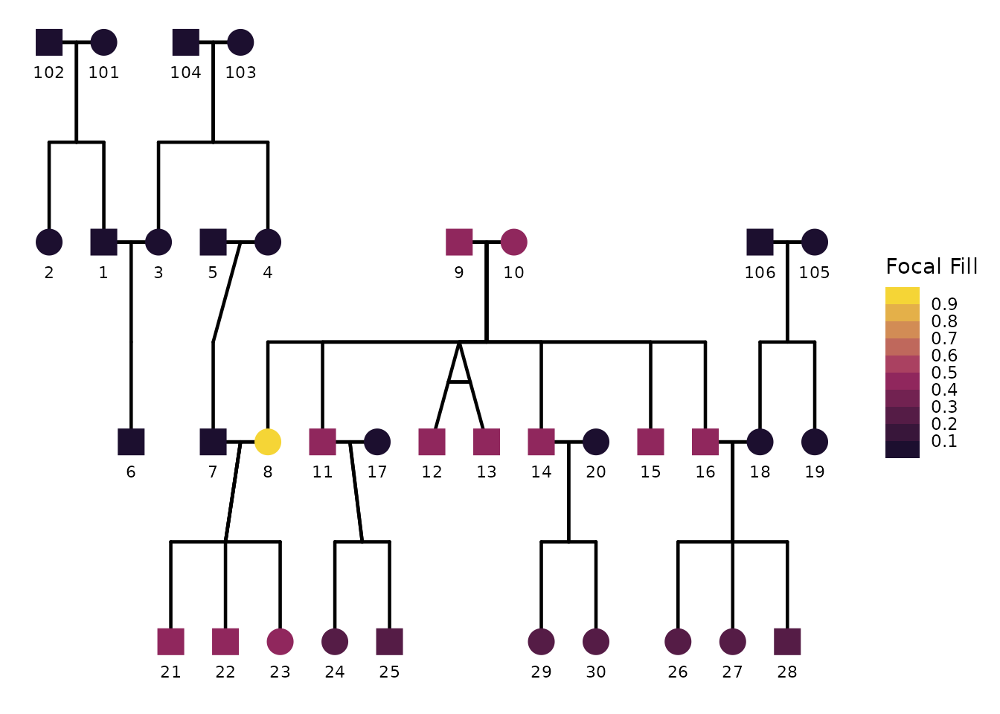
Handling missing and zero values
When focal fill is computed, some individuals can have missing focal
values (for example if they are disconnected). You can control the color
used for missing values with focal_fill_na_value. The
focal_fill_force_zero option forces exact zeros to be
treated as missing so they can be filled in using
focal_fill_na_value.
ggPedigree(
potter,
famID = "famID",
personID = "personID",
momID = "momID",
dadID = "dadID",
config = list(
focal_fill_include = TRUE,
sex_color_include = FALSE,
focal_fill_personID = 4,
focal_fill_force_zero = TRUE,
focal_fill_na_value = "grey75"
)
)
Using viridis-based focal fill
If you want perceptually uniform color scaling, focal fill supports
viridis options through focal_fill_method = "viridis_c"
(continuous) or "viridis_d" (discrete). You can control the
viridis option and range using:
focal_fill_viridis_optionfocal_fill_viridis_beginfocal_fill_viridis_endfocal_fill_viridis_direction
Here the focal fill is drawn using paternal relatedness. Each individual’s fill color indicates which patriline they belong to, colored using a discrete viridis palette.
ggPedigree(
potter,
famID = "famID",
personID = "personID",
momID = "momID",
dadID = "dadID",
config = list(
focal_fill_include = TRUE,
sex_color_include = FALSE,
focal_fill_personID = 5,
focal_fill_method = "viridis_d",
focal_fill_component = "patID",
focal_fill_viridis_option = "D",
focal_fill_viridis_begin = 0.05,
focal_fill_viridis_end = 0.95,
focal_fill_viridis_direction = 1,
focal_fill_legend_show = TRUE
)
)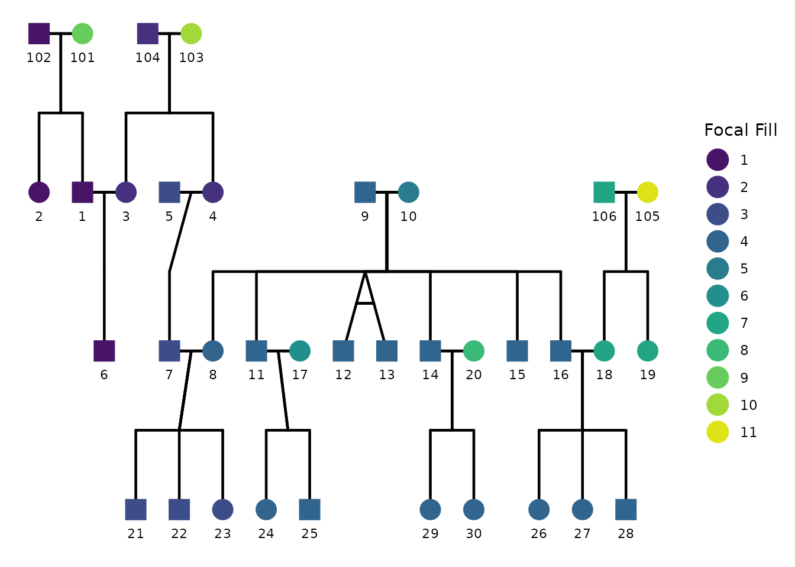
7) Global greyscale / black-and-white switch
If you want a black-and-white plot, you can request it using:
-
color_theme = "greyscale"(also accepts"bw","black", etc.)
This triggers coordinated adjustments so the plot remains coherent without manually changing multiple palettes.
ggPedigree(
potter,
famID = "famID",
personID = "personID",
momID = "momID",
dadID = "dadID",
config = list(
color_theme = "bw",
focal_fill_include = TRUE,
sex_color_include = FALSE,
focal_fill_personID = 5,
segment_linewidth = 0.7,
point_scale_by_pedigree = FALSE,
point_size = 6
)
)
8) Interactive pedigrees: ggPedigreeInteractive()
Interactive pedigrees usually require thinner segments and careful
tooltip selection. Tooltips are controlled primarily through
tooltip_columns, while most drawing options are still
handled by config.
ggPedigreeInteractive(
potter,
famID = "famID",
personID = "personID",
momID = "momID",
dadID = "dadID",
tooltip_columns = c("personID", "first_name", "sex"),
config = list(
label_include = FALSE,
point_scale_by_pedigree = FALSE,
point_size = 7,
segment_linewidth = 0.5
)
)Saving and loading a config file
If you want to reuse the same overrides across scripts or share them with collaborators, save your config list.
cfg <- list(
point_scale_by_pedigree = FALSE,
point_size = 6,
segment_linewidth = 0.7,
label_include = TRUE,
label_text_size = 3,
sex_color_palette = c("purple", "orange", "grey50")
)
saveRDS(cfg, file = "ggpedigree_config.rds")
cfg <- readRDS("ggpedigree_config.rds")
ggPedigree(
potter,
famID = "famID",
personID = "personID",
momID = "momID",
dadID = "dadID",
config = cfg
)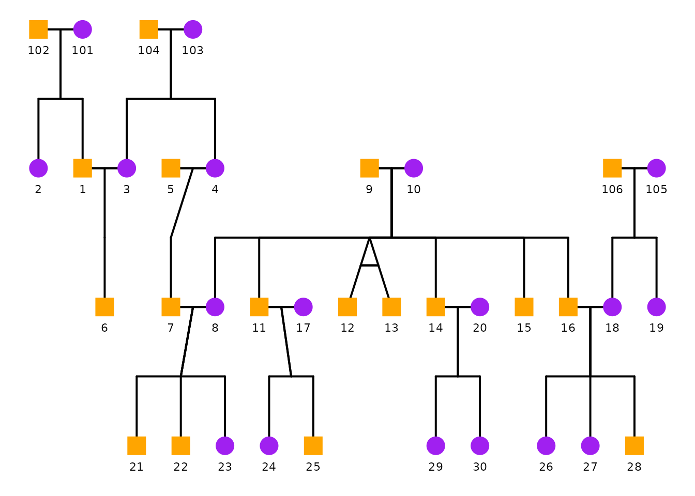
Config reference
The config argument accepts many options. Most users
will only change a small subset, but the full list of supported keys can
be printed programmatically.
Show all config keys (names only)
cfg_names <- sort(names(getDefaultPlotConfig("ggPedigree")))
tibble::tibble(Config_Key = cfg_names) %>%
knitr::kable()| Config_Key |
|---|
| add_phantoms |
| alpha |
| annotate_include |
| annotate_x_shift |
| annotate_y_shift |
| apply_default_scales |
| apply_default_theme |
| axis_text_angle_x |
| axis_text_angle_y |
| axis_text_color |
| axis_text_family |
| axis_text_size |
| axis_x_label |
| axis_y_label |
| ci_include |
| ci_ribbon_alpha |
| code_female |
| code_male |
| code_na |
| code_unknown |
| color_palette_default |
| color_palette_high |
| color_palette_low |
| color_palette_mid |
| color_scale_midpoint |
| color_scale_theme |
| color_theme |
| debug |
| drop_classic_kin |
| drop_non_classic_sibs |
| filter_degree_max |
| filter_degree_min |
| filter_n_pairs |
| focal_fill_chroma |
| focal_fill_component |
| focal_fill_force_zero |
| focal_fill_high_color |
| focal_fill_hue_direction |
| focal_fill_hue_range |
| focal_fill_include |
| focal_fill_legend_show |
| focal_fill_legend_title |
| focal_fill_lightness |
| focal_fill_low_color |
| focal_fill_method |
| focal_fill_mid_color |
| focal_fill_n_breaks |
| focal_fill_na_value |
| focal_fill_personID |
| focal_fill_scale_midpoint |
| focal_fill_shape |
| focal_fill_use_log |
| focal_fill_viridis_begin |
| focal_fill_viridis_direction |
| focal_fill_viridis_end |
| focal_fill_viridis_option |
| generation_height |
| generation_width |
| group_by_kin |
| grouping_column |
| hints |
| label_column |
| label_include |
| label_max_overlaps |
| label_method |
| label_nudge_x |
| label_nudge_y |
| label_nudge_y_flip |
| label_segment_color |
| label_text_angle |
| label_text_color |
| label_text_family |
| label_text_size |
| match_threshold_percent |
| matrix_diagonal_include |
| matrix_isChild_method |
| matrix_lower_triangle_include |
| matrix_sparse |
| matrix_upper_triangle_include |
| max_degree_levels |
| optimize_plotly |
| outline_additional_size |
| outline_alpha |
| outline_color |
| outline_include |
| outline_multiplier |
| overlay_alpha_affected |
| overlay_alpha_unaffected |
| overlay_code_affected |
| overlay_code_unaffected |
| overlay_color |
| overlay_include |
| overlay_label_affected |
| overlay_label_unaffected |
| overlay_legend_show |
| overlay_legend_title |
| overlay_shape |
| override_many2many |
| ped_align |
| ped_packed |
| ped_width |
| plot_subtitle |
| plot_title |
| point_scale_by_pedigree |
| point_size |
| recode_missing_ids |
| recode_missing_sex |
| relation |
| return_interactive |
| return_mid_parent |
| return_static |
| return_widget |
| segment_default_color |
| segment_lineend |
| segment_linejoin |
| segment_linetype |
| segment_linewidth |
| segment_mz_alpha |
| segment_mz_color |
| segment_mz_linetype |
| segment_mz_t |
| segment_offspring_color |
| segment_parent_color |
| segment_scale_by_pedigree |
| segment_self_alpha |
| segment_self_angle |
| segment_self_color |
| segment_self_curvature |
| segment_self_linetype |
| segment_self_linewidth |
| segment_sibling_color |
| segment_spouse_color |
| sex_color_include |
| sex_color_palette |
| sex_legend_show |
| sex_legend_title |
| sex_shape_female |
| sex_shape_include |
| sex_shape_labels |
| sex_shape_male |
| sex_shape_unknown |
| status_alpha_affected |
| status_alpha_unaffected |
| status_code_affected |
| status_code_unaffected |
| status_color_affected |
| status_color_palette |
| status_color_unaffected |
| status_include |
| status_label_affected |
| status_label_unaffected |
| status_legend_show |
| status_legend_title |
| status_shape_affected |
| tile_cluster |
| tile_color_border |
| tile_color_palette |
| tile_geom |
| tile_interpolate |
| tile_linejoin |
| tile_na_rm |
| tooltip_columns |
| tooltip_include |
| use_only_classic_kin |
| use_relative_degree |
| value_rounding_digits |